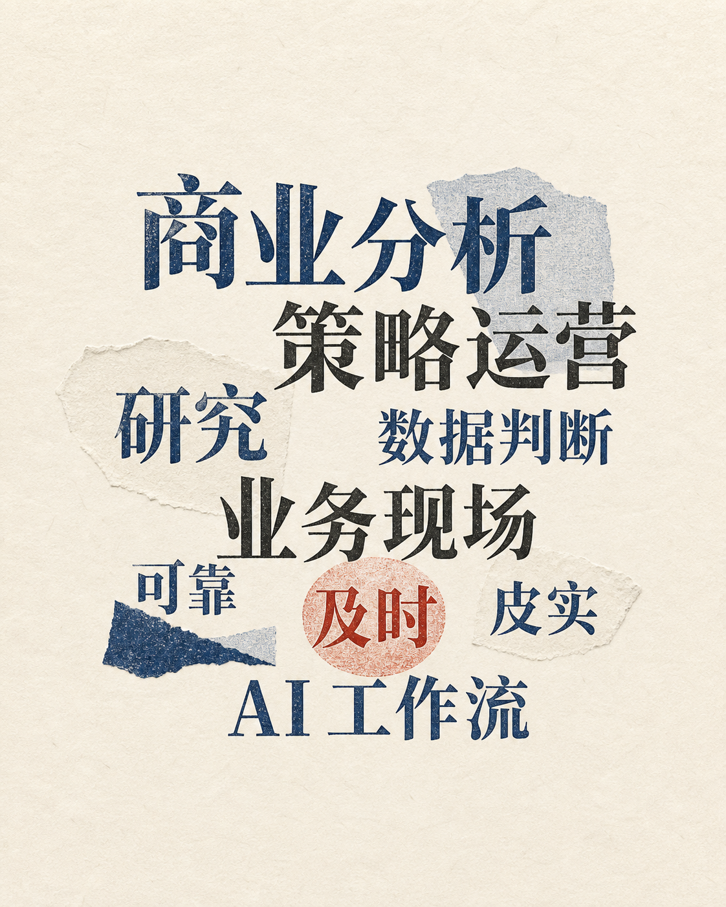

变化到底发生在哪里？
先别急着解释涨跌。把时间、对象、环节和统计口径逐层拆开，确认它是整体变化，还是某一类商品、地区或用户带来的波动。
PERSONAL INDEX / 01
你好，我是刘柏杨，复旦大学国际商务硕士。过去几年，我在不同业务场景里做过研究、运营与分析：从行业和公司研究，到客服运营，再到国际电商和即时配送。我的工作习惯，是从分散的材料、业务现场和数据口径里还原事实，把判断落到下一步能做什么。
HOW I START
拿到一张报表，或者听到一句“最近指标不太好”，我一般不会马上找原因。很多时候，不是没有数据，而是大家说的“问题”还没有指向同一个地方。
先别急着解释涨跌。把时间、对象、环节和统计口径逐层拆开，确认它是整体变化，还是某一类商品、地区或用户带来的波动。
数据能指出哪里不一样，但不一定直接告诉我们原因。我会把报表、业务流程和一线反馈放在一起，先把对不上的地方留下来。
说明现在还缺哪块信息、最值得先动哪个环节、谁需要参与，以及之后看什么信号确认有没有效果。
EDUCATION / TRAINING
郑大的项目和研究让我开始重视证据，复旦把我带进更大的商业语境。真正留下来的，是研究、表达、协作和组织责任在日常里反复练出来的稳定性。
从美团购药满意度调研、北京大学牵头的中小微企业调查（ESSIC），到毕业论文中的城市面板数据研究，本科让我练习把问题、样本、数据与结论一一对应。
国际商务、企业国际化、统计方法、国际金融、公司法与生成式 AI 都进入过课程讨论；团支书的日常协作，也让我更直接地练习组织、沟通与及时回应。
TRAINING / 04
问卷适合了解感受，访谈适合补充现场，公开数据和企业资料也各有边界。材料放在一起，不代表它们能回答同一个问题。
单位、时间范围、统计对象，以及单月、累计和环比，常常比一个漂亮结论更早暴露问题。先确认大家看的是不是同一个东西。
尽量保留来源、处理过程和关键判断。别人问“这个数从哪里来”“为什么这样判断”时，能够沿着材料回到依据。
IN THE FIELD
四段实习的场景不同，却有一条连续的线：从还原事实，到理解供需，再到在复杂约束里判断更可执行的一步。
围绕公司专题、历史数据、订单与行业高频指标做资料追溯和交叉核对。研究的起点是把事实和口径做实，再区分周期波动、资产变化与经营改善。
在客服 WFM 场景里，持续看需求、人力、排班、积压和 SLA 的关系。面对异常，会继续排查是供给不足、执行偏差，还是数据链路与统计口径的问题。
在菲律宾 Lifestyle 类目中，参与经营分析和策略推进：把结果拆回商家、商品、价格、内容与履约环节，再明确需要优先推动的动作与协作节奏。
即时配送把视角拉向供给结构、订单需求、履约时效与成本效率的联动。分析不只解释指标，更需要在目标、资源和时效之间讲清取舍。
SELECTED CASES
它们不是“项目清单”。每一段都从一个具体问题开始：先确认发生了什么，再找能落到下一步的解法。
把公开披露、历史数据与行业指标放回同一条事实链，区分资产变化、周期波动和经营改善。
把来量、人力、排班、积压和服务时效一起看，寻找供需错配真正发生的时段与环节。
不把异常只归因于“人不够”：继续核对派发、执行、数据链路和统计口径。
从商家、商品、价格、内容与履约拆开结果，再把优先动作和协作节奏往前推。
把供给结构、订单需求、履约时效和成本效率放进同一张图里，讨论可执行的平衡点。
从购药满意度调研到中小微企业调查，练习让问卷、访谈和公开信息各自回答该回答的问题。
HOW I WORK
不是方法论口号，是几次实习和做项目之后，慢慢留下来的习惯。
这个指标指谁、发生在哪一步、受什么限制？把对象弄清楚，才不会一上来就在错的地方使劲。
来源、口径和过程尽量留住。信息还不够，就直接说还要补什么，不把猜测说成事实。
很多事等不到所有信息齐全。先把下一步要谁配合、看什么信号说清楚，再根据反馈调整。
把检查项、模板或 SOP 留下来。下次自己少走弯路，交到别人手上也能接得住。
AI WORKBENCH
在工作里，我会用 AI 帮忙整理零散材料、补检查项、搭一个 SOP 初稿；数据、口径和业务判断，仍要回到原始材料核对。涉及敏感信息，也不会放进个人工具链。
在个人项目里，我先把问题说清楚，再让 AI 协助拆结构、写代码、排查问题。重点不是一次生成，而是做出来以后继续看、继续改。

HOW I START
先别急着解释涨跌。一个指标变了，可能是整体都在变，也可能只是某个时间段、某类商品、某个地区，或者一批用户拉动了结果。我会把时间、对象、环节和统计口径逐层拆开，先确认我们看到的是同一个变化，再去讨论它为什么发生。
数据能告诉我们哪里不一样，但不一定能直接告诉我们原因。我会把报表、业务流程和一线反馈放在一起看，遇到对不上的地方，先把疑点留下来，而不是急着选一个听起来最顺的解释。
最后至少应该讲清楚：还缺哪一块信息，最值得先动的是哪个环节，谁需要参与，以及改完以后看什么信号来判断有没有效果。能让事情往前走，比把结论写得很完整更重要。
EDUCATION / TRAINING
本科阶段，我在一个个具体题目里练习研究。美团购药满意度调研让我接触从问卷设计、样本回收到结果整理的过程，开始注意问题表述、样本构成和回答偏差会怎样影响判断。
参与由北京大学牵头的中小微企业调查（ESSIC）时，我需要面对具体业务对象：先理解企业在做什么，再把访谈、调查材料和公开信息放在一起核对，而不是只记录对方说了什么。毕业论文则练习变量定义、数据整理、模型分析和结果解释。
读研以后，国际商务、企业国际化、统计方法、国际金融、公司法和生成式 AI 都进入过课程与讨论。我也承担团支书的协调工作，在通知传达、活动组织、材料汇总与同学沟通中练习组织责任和及时回应。
TRAINING / 04
本科做调研和论文时，我逐渐养成了一个习惯：先把问题和判断对象说清楚，再决定需要什么材料。问卷适合了解感受，访谈适合补充现场，公开数据和企业资料也各有边界，不能因为材料放在一起，就把它们当成同一种证据。
后来做行业研究和经营分析，我仍然会先核对数据的单位、时间范围、统计对象，以及单月、累计和环比等口径。很多问题并不在计算过程，而在比较之前没有确认大家看的是不是同一个东西。
我会尽量留下来源、处理过程和关键判断。这样做未必最快，但当别人问“这个数从哪里来”“为什么这样判断”时，能够沿着材料回到依据。可靠不是把结论说得很满，而是把证据边界和仍待核对的地方讲清楚。
IN THE FIELD
从年报、公告、业绩交流纪要、行业统计和公司公开披露中拼出相对完整的业务图景。面对收入变化，我会继续追问产品、客户、区域、订单和行业景气的传导，练习从公开材料中追溯事实、区分经营变化与周期波动。
在客服 WFM 场景里，关注每天需要多少人、实际有多少人，以及供需错配如何影响服务表现。将需求、人力安排、排班执行、放休情况和 SLA 放在一起观察，再结合时段、团队和业务变化判断人力余缺。
在菲律宾 Lifestyle 类目的经营场景中，参与类目分析与策略推进。把结果拆回商家、商品、价格、内容和履约等环节，再整理优先问题、行动节奏和协作事项，持续确认动作是否真正传导到经营表现。
在即时配送场景中，供给结构、订单需求、履约时效、运力使用和成本表现会互相牵动。时间虽短，但它让我更直观地感受到：即时业务很少有孤立的最优解，关键是在多重约束下把取舍讲清楚。
AI WORKBENCH
我把 AI 放在问题定义、材料整理、结构搭建和快速验证这些环节里，帮助一件事更快进入可检查、可修改的状态。在工作中，先明确目标、对象、口径和交付要求，再让它协助完成资料归类、信息提取、问题拆解、检查清单和 SOP 初稿。
AI 生成的内容只能作为待核对的中间结果：数据来源、统计口径、事实表述和业务判断，仍必须回到原始材料、公开信息或实际流程中确认；涉及敏感信息时，不使用公司内部资料直接处理。
在个人项目里，我先定义要解决的问题和页面想表达的内容，再让 AI 协助拆分信息架构、设计页面结构、生成代码、处理数据结构和排查报错。跑起来之后，再通过实际使用观察交互、内容和视觉上的问题，继续修改，必要时推翻原来的方案。